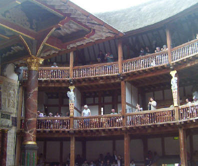

The Globe Theater
Welcome! This site contains estimated blueprints of the Globe Theater in London. These blueprints contain the three major levels of the Globe Theater. Click on any of the levels to see that blueprint, and hover your mouse over various parts of the blueprint to see more information. NOTE: Most or all of the images are from the new Globe built in London. This is because it is easier to identify the parts when there is a color photograph than a predicted sketch.
Yard Level | [2nd Level] | 3rd Level
This is where the wealthy and middle class would sit. The cost was 2 pence for the galleries, and there would be a collector with a box who stood at the stairs leading there.
This is the balcony, located above the stage. Here, either actors would use it for certain scenes, musicans would play, or the upper class would sit around there.
Page last modified on Tuesday, November 20th, 2007. © 2007 Oleg Vaskevich.